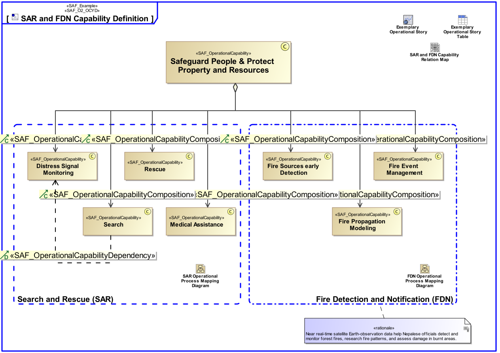

O2_OCYD Operational Capability Definition Viewpoint
| Domain | Aspect | Maturity |
|---|---|---|
| Operational | Taxonomy & Structure |

The Operational Capability Definition Viewpoint defines a taxonomy of Capabilities from a Stakeholder’s perspective including composition, specialization, and dependency relationships between Operational Capabilities.
The Operational Capability Definition Viewpoint supports the “Business or Mission Analysis Process” activities of the INCOSE SYSTEMS ENGINEERING HANDBOOK 2023 [§ 2.3.5.1] defining Capabilities at an operational level (e.g., business or mission profile, and operational scenarios). The Operational Capability Viewpoint contributes to the problem or opportunity statement.
A block definition diagram (BDD) featuring Operational Capabilities, their composition, specialization, and dependency relationships.
The following Stereotypes / Model Elements are used in the Viewpoint: